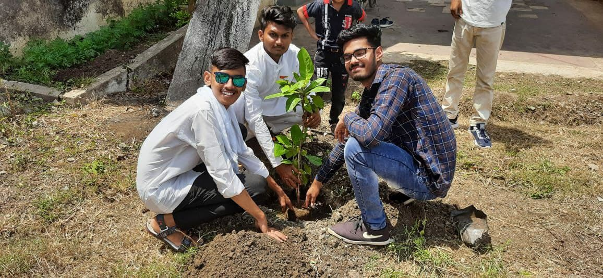

Introducing THE WINGS CAFE by FAB47 (2013-20 Batch)
Recently FAB47 has signed the contract of professional mural of one cafeteria in front of Agragrami school, pipri meghe, Wardha. After 6 days of hardwork by whole group we executed the cafeteria named THE WINGS CAFE. We conscientiously did our work and present it ininsignificant time.
To spectacle the promise and to emphasize the glory of sevashram to all our adored visitant.
FAB47 (2013-20) pictured a wall painting at SHIVAJI bhau's SEVASHRAM.
In the era of technology and development the "Concrete Jungle" is expanding and mother earth is loosing it's soothing assets such as green plants trees. As a debtor to mother earth we need to pay the part of our debt and to do so FAB 47 ALLIANCE have decided to provide an aid to the environment and help it heal by performing a Plantation on the the face of independence day (15th August 2021) at Matoshri Vriddhashram Sindhi meghe Wardha.
In this world of Miracles, one feels blessed and fortunate when he gets a baby, and for a child or anyone the most important ones are his parents. Unfortunately there some kids who are not blessed to have their parents with them and are left away from the world. For such kids, Shivaji Choudhary bhau have taken an initiative to run an Ashram to help them, educate them and making their lives better. In accordance to that FAB47 ALLIANCE have decided to donate bansuris to sewashram, to nuture and cultivate their love for music.
In this world of Miracles, one feels blessed and fortunate when he gets a baby, and for a child or anyone the most important ones are his parents. Unfortunately there some kids who are not blessed to have their parents with them and are left away from the world. For such kids, Shivaji Choudhary bhau have taken an initiative to run an Ashram to help them, educate them and making their lives better. In accordance to that FAB47 ALLIANCE have decided to give and aid to the Ashram and donate one of the basic needs of human, that is clothes to wear. So we have collected the clothes from our batch mates to be donated.
THE PANDEMIC NOW HAS AFFECTED MANY OF THE THINGS ALL OVER THE WORLD ONE OF SUCH THING IS EDUCATION THE SITUATION IS SO HARSH FOR SOME OF THE STUDENTS THAT THEY AREN'T GETTING THE APPROPIATE BOOKS TO LEARN AND LOOKING INTO THIS NAVODAYA ALUMNI WELFARE ASSOCIATION (NAWA) HAS LAUNCHED A PROGRAMME TO PROVIDE THE RIGHT BOOKS TO NEEDFUL STUDENTS UNDER WHICH OUR FAB47 ALLINACE IS COOPERATING RESPONDING TO THE CALL WE CONTRIBUTED UPTO 100 BOOKS FROM ALMOST ALL CANDIDATE OF OUR BATCH